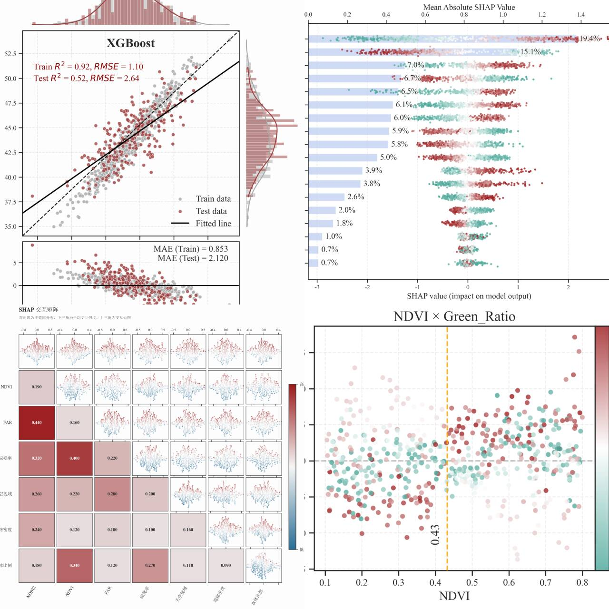
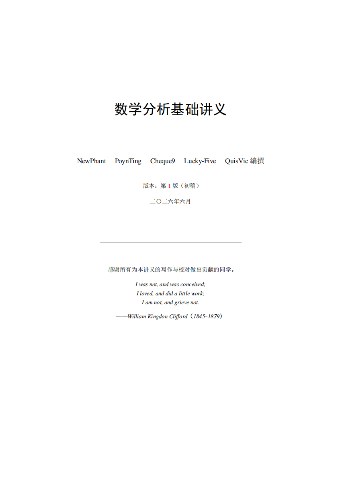
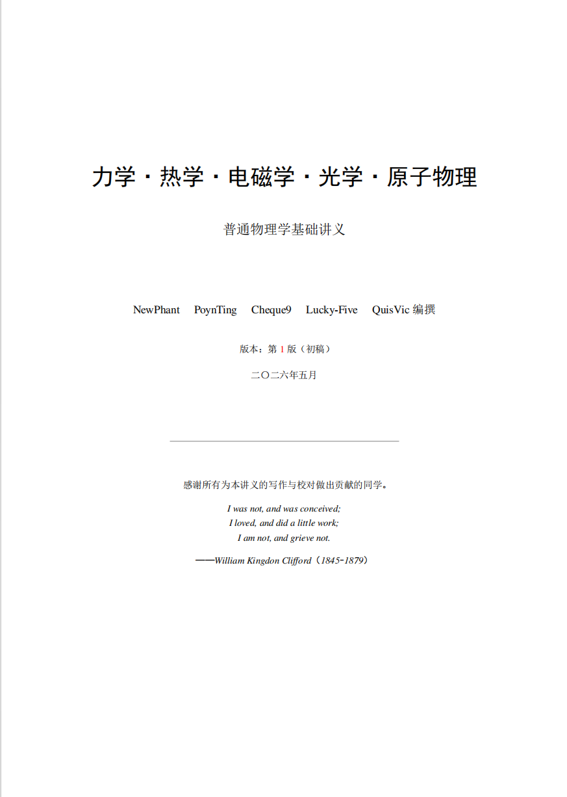

我的研究方向是 Agent 与具身智能。
我关心的是 AI 如何从语言模型走向自主系统，希望 AI 能组织知识、调用工具、设计实验、执行流程，并在反馈中修正自己的判断。
在 Agent 方向，我主要关注 Agentic Science、autonomous research agent 和 multi-agent workflow。目前在具体研究 LLM 如何参与科研过程中的文献建模、假设生成、实验设计、代码实现、结果分析和可复现性审计，形成可执行、可验证、可迭代的研究闭环。
在具身智能方向，我关注 Embodied Foundation Model、Vision-Language-Action Model、World Model 和 Sim-to-Real Transfer。目前在具体研究如何把语言、视觉、空间表征和动作策略接到现实环境里，从而感知一个三维世界、判断物体的可操作性与规划长程动作，并且能够在不同机器人本体之间迁移策略，从仿真走向真实部署。
我最终想做的是 reliable intelligence infrastructure：一种能长期服务于科研、工程和教育的智能基础设施。Agent 让 AI 获得组织复杂任务的能力，具身智能让 AI 获得进入现实世界的接口。
用 Agent 思维解决科研、工程和教育中的真实问题。

设计并实现 23+ Markdown-native 技能的零依赖科研智能体系统，覆盖文献检索 → 想法生成 → 实验执行 → 可视化 → 论文写作 → 审稿回复的全闭环。8 小时过夜运行完成 4 轮审稿-修改循环，审稿分从 5.0 提升至 7.5，自动触发 20+ GPU 实验并生成全套图表。
自研 /figure-spec 确定性 JSON→SVG 引擎，消除 LLM 出图随机性。同一 spec，同一图，100% 可复现。支持形状感知边缘裁剪、自环、CJK 多行标签。
跨模型对抗审图回路：Claude 生成 → GPT-5.4 独立审查评分 → 结构化修订指令反馈。将生成与评估解耦到不同模型家族，消除自我审查盲区。
多模型家族对抗审查 + Research Wiki 持久化分析目标。不同模型的 failure mode 相互抵消，防止长周期任务中的目标漂移。
3 阶段 evidence-to-claim 审计级联：实验审计 → 结果-声明映射 → 零上下文交叉验证。论文中每张图可追溯回原始实验数据。
统一 spec→多格式管线：实验数据 → 插图 → Beamer PDF + PPTX + 演讲备注 → A0 海报。一个 spec，所有格式，无需手动 format translation。
Gap Report 定位「应该存在但缺失的洞察」+ 对抗深审：不问「这对吗」而问「证据支持这声明吗？缺什么？还有什么别的解释？」


与南京大学物理系、南京信息工程大学人工智能系学生合作，人负责内容，NSC 负责编排——LaTeX 排版校对、公式推导检查、结构审校。
围绕 Agent 系统、具身智能与工程落地的核心能力。
设计跨模型对抗协作架构（Claude × GPT、Codex × Gemini），executor-reviewer 异构循环，不同模型 failure mode 互补消除自我审查盲区。
Agent 不只处理文本，它操作真实的计算集群——触发代码、部署到远程 GPU、采集指标、反馈给审图 Agent，形成物理世界的闭环。
现有 Agent 系统最大的风险不是性能，而是幻觉无感穿越 pipeline 进入论文。NSC 用 3 阶段审计级联堵住这条路。
以 Python 为核心，跨多个 LLM/VLM 提供商，具备从代码到 GPU 集群到最终产物的全链路工程能力。
"I was not, and was conceived;
I loved, and did a little work;
I am not, and grieve not."
— 周仕桥